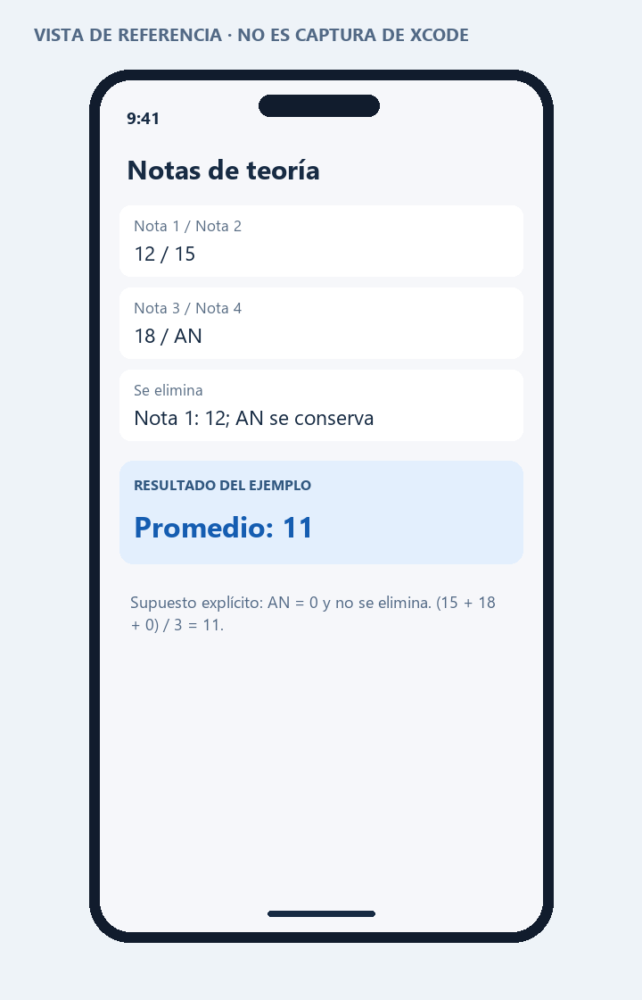

PROGRAMACIÓN EN MÓVILES AVANZADO · S08
05 · Cálculo de notas
Actividad de la página 12. Se ingresan exactamente cuatro notas de 0 a 20 y se elimina una sola nota numérica mínima antes de promediar.
Ambigüedad de la guía: dice “teoría” pero introduce AN como laboratorio anulado y no define su valor. El usuario confirmó AN = 0, no eliminable. No se afirma que sea el reglamento oficial de evaluación de TECSUP. Si el docente indica otra regla, debe modificarse el modelo.
Reglas implementadas
- Validar cuatro entradas. Admitir AN sin distinguir mayúsculas y espacios laterales.
- Conservar todos los AN como cero.
- Entre las notas numéricas, eliminar una mínima. En empate eliminar la primera.
- Dividir entre las tres entradas conservadas; si las cuatro son AN, conservar las cuatro y dividir entre cuatro.
- Redondear al entero más cercano. En una mitad exacta positiva se redondea hacia arriba.
Ejemplos resueltos
| Notas | Qué se elimina | Promedio | Resultado |
|---|
| 12, 15, 18, 10 | 10 | (12+15+18)/3 = 15 | 15 |
| 12, 15, 18, AN | 12; AN se conserva | (15+18+0)/3 = 11 | 11 |
| AN, AN, 14, 20 | 14 | 20/3 = 6.6667 | 7 |
| AN, AN, AN, AN | Ninguna | 0/4 | 0 |
| 10, 10, 20, 20 | Solo el primer 10 | 50/3 = 16.6667 | 17 |
| 0, 13, 13.5, 14 | 0 | 40.5/3 = 13.5 | 14 |
| 21, 15, 18, 12 | Ninguna | Error de rango | Sin resultado |
Código y ejecución
Abre Proyecto/NotasS08.xcodeproj en Xcode 15 o posterior, con un simulador iOS 17 o posterior. El código principal está en Proyecto/NotasS08/NotasView.swift. Consulta las instrucciones de ejecución.
La estructura de proyecto está preparada. La compilación y las capturas reales quedan pendientes de ejecutar en una Mac; no se presentan como pruebas realizadas.
Vista de referencia
Representación de la interfaz y los datos de ejemplo. No es una captura del simulador. La vista ejecutable se encuentra en el archivo SwiftUI y en su #Preview.
